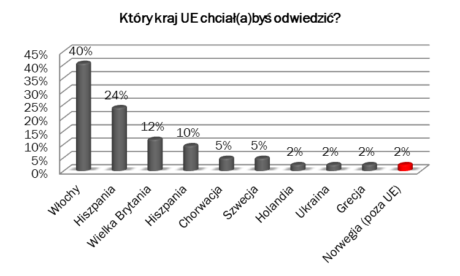

Witamy na stronie o projekcie gimnazjalnym
Naszym tematem jest "Jaki kraj Unii Europejskiej chciałbyś odwiedzić i dlaczego?". Jestreśmy uczniami klasy drugiej Gimnazjum w Kamieńcu Wrocławskim.
Jak wybieraliśmy kraj?
Aby w naszym projekcie uwzględnić opinię całej naszej grupy rówieśniczej rozdaliśmy ankietę wśród uczniów z naszego rocznika, której pytania były następujące
- Czy uważasz, że wstąpienie Polaków do Unii Europejskiej pozytywnie wpłynęło na intensywność podróży Polaków?
- Tak
- Nie
- Nie mam zdania
- Zwiedzając Kraj Unii Europejskiej chciał(a)byś poznać (max 2 odp.):
- Osobliwość przyrody (góry, morza, jeziora, piękne oraz malownicze krajobrazy)
- Zwyczaje ludzi, ich język, kuchnię...
- Zabytki, muzea, galerie sztuki…
- Parki wodne, baseny, cyrki, wesołe miasteczka…
- Wakacje chciał(a)byś spędzić:
- W ciepłym kraju śródziemnomorskim
- W rejonie chłodnej północy
- W umiarkowanym klimacie środkowej Europy
- Bardziej interesuje Cię poznanie:
- Stolic krajów
- Mniejszych miasteczek
- Wsi
- Kraj wolał(a)byś zwiedzić z:
- Rodzicami
- Dalszą rodziną
- Grupą rówieśników
- Sam/Sama
- Co preferujesz?
- Zorganizowane wczasy w jednym miejscu
- Wycieczkę objazdową po danym kraju
- Który kraj UE chciał(a)byś odwiedzić?
- Pytanie otwarte
Wyniki prezentują się następująco:

Wszystkie wyniki do pobrania tutaj.
Po przeprowadzeniu ankiety zastanawialiśmy się czy wybrać Hiszpanię, czy Włochy. Stwierdziliśmy jednak, że ciekawsza będzie Italia. A dlaczego? Aby się tego dowiedzieć zapraszamy na podstronę "Dlaczego Włochy?".